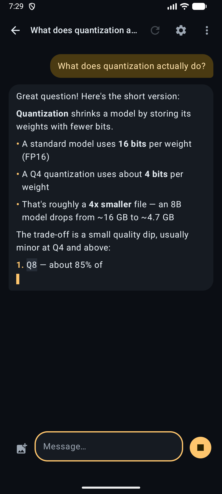
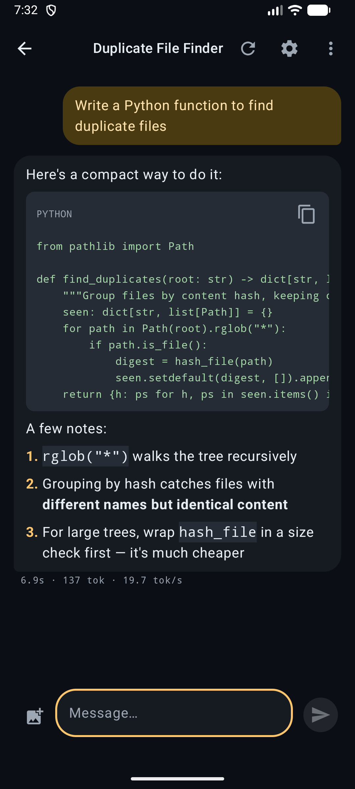
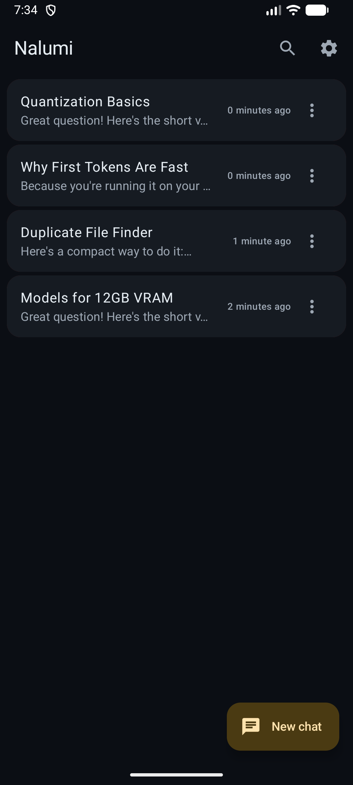

Chat with your own AI.
Nalumi is an Android app that talks to the LLM servers you host — Ollama, LM Studio, vLLM, llama.cpp. Conversations stay on your phone and go only to the server you choose.
Free · No ads · No tracking · About 3 MB
Summarize quantization in one paragraph.
Quantization stores a model’s weights with fewer bits — 16-bit floats become roughly 4-bit integers. The model shrinks about fourfold, so an 8 billion-parameter model drops from ~16 GB to ~4.7 GB and fits on a consumer GPU. Quality dips slightly; Q4_K_M is the usual sweet spot.
127 tokens · 41.6 tok/s
Works with what you already run.
Point Nalumi at any server on your LAN or VPN — it speaks Ollama’s native protocol and any OpenAI-compatible API, with custom headers for the rest.
Supported natively and through its OpenAI-compatible endpoint.
http://localhost:11434
Local server mode, straight from the app.
http://localhost:1234/v1
Production-grade serving on your own box.
http://localhost:8000/v1
llama-server on anything from a laptop to a homelab GPU rig.
http://localhost:8080/v1
Route to many models behind one proxy.
http://localhost:4000/v1
Any OpenAI-compatible endpoint, with custom headers and API keys per profile.
https://your-server/v1
Nothing leaves your device.
Nalumi has no accounts, no analytics and no ads. Your messages are sent only to the server address you configure — the developer never sees them, or anything else. Uninstalling deletes everything; there is no cloud copy.
- No accounts — nothing to sign up for
- No analytics — not a single tracker
- No ads — your screen is yours
A real chat client.
Not a wrapper around a web view — a native Android app, built with Jetpack Compose, that treats your model like a first-class citizen.



Built like a tool, not a platform.
- Streaming responses
- Answers arrive token by token, with speed and token counts — so you know your server is alive.
- Markdown & code
- Formatted answers, code blocks with a copy button, no mangled tables or lists.
- Auto-titled conversations
- Every chat is named from its first exchange, using your own model.
- Search
- Find any conversation from the list, the moment you need it.
- Image attachments
- Send photos to vision models, straight from your gallery.
- Custom headers
- Authorization overrides, X-Title, anything your endpoint expects.
- Server profiles
- Keep your desktop rig, a VPN box and a hosted endpoint side by side.
- Light, dark or system
- The theme follows your phone or your taste.
- Tiny
- About 3 MB to download. It does one job and stays out of the way.
Free, with an optional tip.
Nalumi costs nothing and shows no ads. If it earns a place on your home screen, you can leave a tip inside the app — processed by Google Play, never linked to your data.
Nalumi is in closed testing on Google Play.
Email us for an invite — and watch this space.